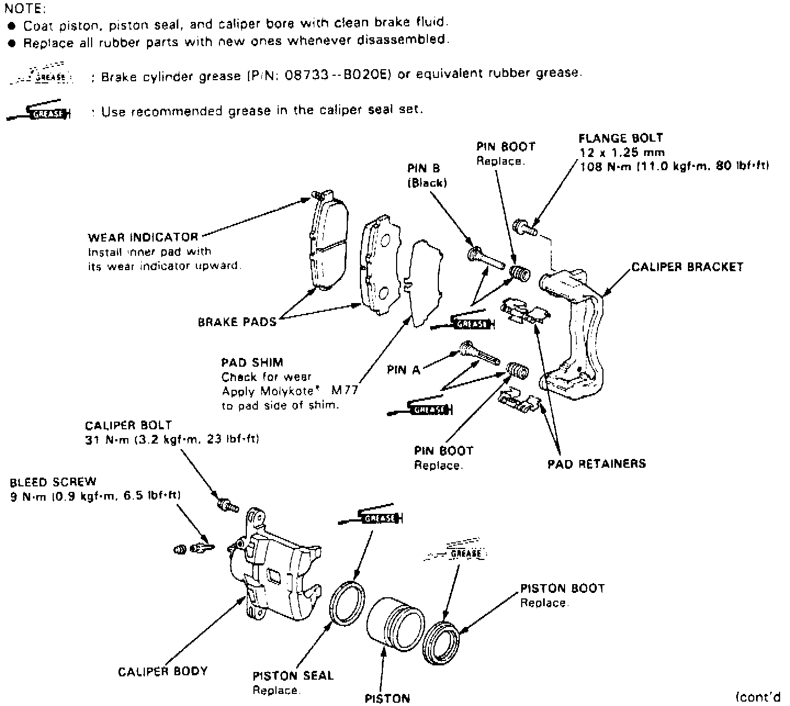

Front
1. Raise and support front of vehicle and remove wheels.2. Remove caliper pin bolt, then pivot caliper up away from rotor.
Fig. 2 Exploded View Of Front Disc Brake Assembly:

3. Remove brake pad shims and pads, Fig. 2.
4. Clean caliper and inspect for excessive wear or damage.
5. Install pad retainers, then pad shims and pads, Fig. 2.
6. Back out bleed screw and push in piston to allow caliper to fit over pads, then tighten bleed screw to specification.
7. Pivot caliper into position, then install pin bolt and tighten to specifications.